Software Engineer
Seoul, South Korea
View the Project on GitHub github.com/oddeveloper
(주)대우건설에서 개발되는 아파트 단지 내에 들어가는 스마트홈 플랫폼으로 크게 관리자 Web, Device Platform, Gateway, Api Server, App 등이 있다. 프로젝트는 총 17명으로 진행되었으며, 실제 시스템 구조와 설계작업을 포함해서 9개월 걸렸다. 해당 프로젝트 수행을 위해서 초기부터 참여하지 않았고, 관리자 Web과 Api Server의 일부 기능을 개발하기 위해 후반에 투입되었다.
사용기술: Java 1.8, Vert.x 3.7.1, Spring Framework 4.3.4, Tiles 3.0, MyBatis 3.4.1, MySQL 5.x, MongoDB 3.x, Bootstrap 3-4.x, Javascript, Websocket, RabbitMQ, Maven 3.6, Jenkins, Tomcat 8.5.42, CentOS 7.x, SVN, Intellij IDEA Community
주요역할: 스마트홈 Admin 개발, Device Platform-App간의 API 개발
IoT 장치간 상호운용성 확보를 위한 표준화 된 공통의 IoT 통신체계 및 플랫폼 개발을 목적으로 OCF협회에서 Open Source로 제공해주었던 Iotivity를 활용하여 Device와 App간의 통신을 중계하는 OCF Cloud를 개발 및 유지보수 하였다. 프로젝트는 총 9명으로 진행되었다.
사용기술: Java 1.8, Spring Boot 2.1.x, JPA, MySQL 5.x, RabbitMQ, Maven 3.x, CentOS 7.x, SVN, Intellij IDEA Community
주요역할: OCF Device의 인증을 위한 Cloud Oauth 개발, OCF Device관리를 위한 Cloud-Admin간 API 개발
사내에서 개발된 IBMS, BEMS, Smarthome Service 등의 실시간 이벤트를 처리하기 위한 목적으로 Open Source Siddhi를 활용하여 개발되었다.
프로젝트는 총 3명으로 진행되었으며, 실제 시스템 구조와 설계작업을 포함해서 9개월 걸렸다. 공공기관이나 개인빌딩 혹은 스마트 홈 등에서 사용되는 IoT 기기를 통해 들어오는 데이터(전력, 공기, 미세먼지 등).
대량의 데이터를 처리하기 위한 구조적 고민과 기존에 개발되어왔던 CEP의 장단점을 고려하여 만들어졌으며, 다양한 분야에 접목하여 서비스를 운영해 본 경험할 수 있었다.
사용기술: Java 1.8, Vert.x 3.5.x, Spring Boot 2.x, MySQL 5.x, Siddhi 4.1.x, Docker, Kafka, Maven 3.x, CentOS 7.x, Git, Intellij IDEA Community
주요역할: 타 시스템 연동을 위한 서버구축(IDC or MS Azure, CentOS 7.x) 및 API 개발, Siddhi 기반 Rule Script 작성
적용사례: 수원시 사물인터넷기반 스마트 빌딩 시스템 내에서 AI로 예측된 데이터 계산 및 에너지 절감관련 이벤트 처리
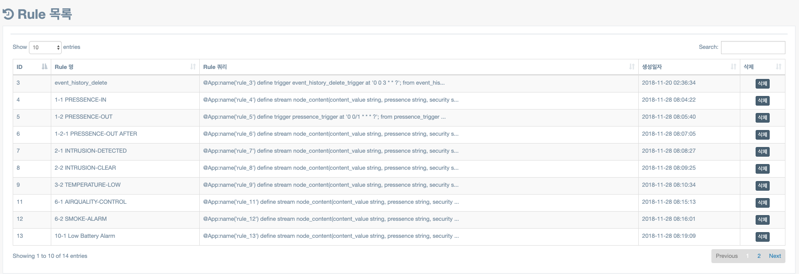 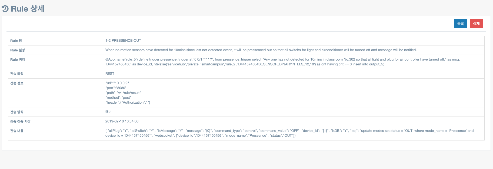
가정용 스마트홈을 대상으로 Service 하기위해 개발되었다.
서버 파트 3명, 모바일 3명, 기획 2명, 디자인 2명으로 구성되어 6개월간 진행되었으며,
개발 이외에 변경사항이나 발생되는 이슈관리, 타 부서와의 의사소통 등에서 많은 경험을 할 수 있었다.
사용기술: Java 1.8, Vert.x 3.3.x, MySQL 5.x, Apache Ignite 1.8, Maven 3.x, CentOS 7.x, Git, Intellij IDEA Community
주요역할: 서버측 API 개발(사용자, 알림, 기기관리)
기존에 개발되었던 웹 서비스에 모바일 서비스를 위한 목적으로 안드로이드 앱을 개발하였다.
앱 초기런칭은 외주개발자가 담당하였고, 서버측 API 설계 및 개발담당을 메인으로 맡았다.
개발시간과 비용을 고려한 점떄문에 시스템 변화 속도가 잦았으며, 이에 따른 API 설계와 개발방법이 필요했다.
또한 고객의 사용자 경험을 통한 요구사항과 의견을 수렴. 일정을 수립하여 조금씩 문제점을 개선해 나갔으며,
이에 따라 앱 개발을 통해 서비스 신청 소요시간이 절반정도 절감.
서비스 이용 고객이 3,000명으로 돌파하는 성과를 이루었다.
사용기술: Ruby 2.3.x, Ruby on Rails 4.2.x, Java 1.7, Android 6.x, Gradle 2.3.x, AWS, Git, Android Studio
주요역할: 안드로이드 앱 연동을 위한 서버쪽 API 설계 및 개발 (Ruby, Ruby on Rails), 안드로이드 User Interface 개선
적용사례: 차량관리이력 서비스를 이용한 대상자를 기준으로 앱에서 정비신청 및 이력관리 서비스 기능 제공
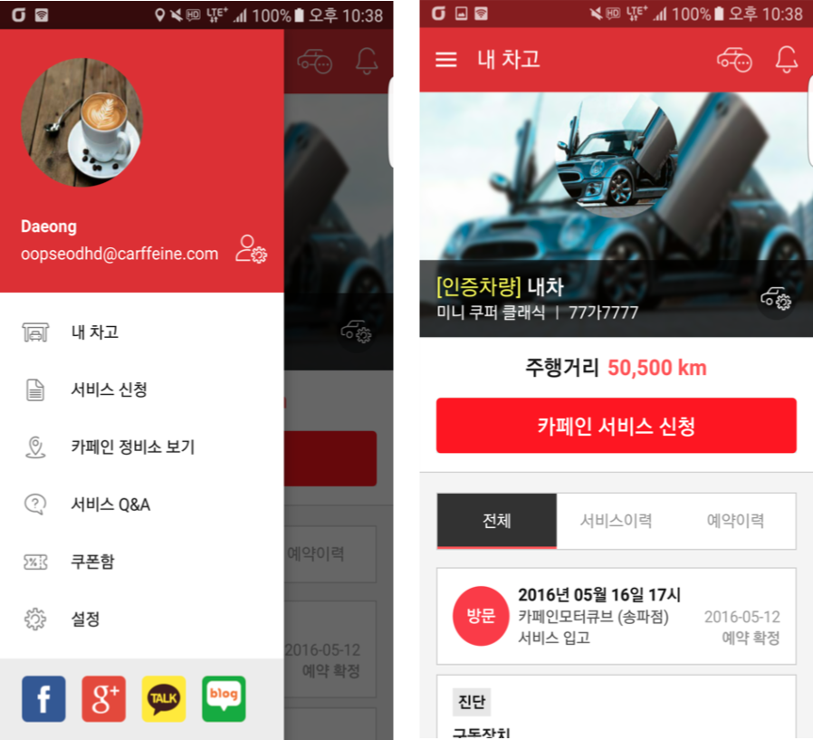
서비스의 초장기 기획, 설계부터 개발, 운영까지 해왔던 프로젝트입니다.
초기 서비스의 기능을 위주로 프로토타입을 개발하였으며,
추후 정비와 고객이 이용할 만한 서비스를 고려하여 추가적인 기능들을 만들었습니다.
- 차량 픽업, 방문정비 서비스
- 자기 차량 관리(진단서=정비수리, 서비스 신청내역)
- 서비스와 제휴된 정비샵 관리 서비스
위 프로젝트를 통해 외부 기업(Qualcomm, 한화S&C) 등으로 부터 투자, 서비스 개선을 통한 사용률 50% 증가
다양한 방식(Slack, Github)의 도구등을 활용해 개발 내 업무를 효율화 시켜나갈 수 있는 경험을 하였습니다.
사용기술: Ruby 2.3.x, Ruby on Rails 4.2.x, Javascript, jQuery, Coffeescript, Foundation 5.x, SASS, AWS, Nginx, MySQL 5.x, Git, New Relic, VI, Ruby Mine
주요역할: 차량이력관리에 필요한 서비스 기능 개발, 비즈니스 로직 및 API 개발, UI개발: 반응형 사이트, 메일 템플릿 적용 (Zurb Foundation 5.x, Ink)
적용사례: 서비스 소개 IT관련 기업들을 대상으로 픽업이나 정비소 방문서비스 등을 제공하여 웹 상에서 차량과 관련된 이력 및 관리 기능제공
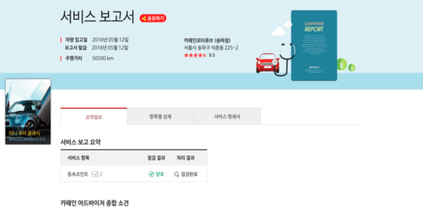 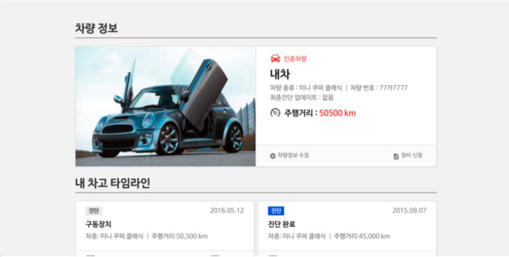
중고거래를 온라인에서 할 수 있는 형태의 웹 서비스로 3개월간 일했었습니다.
주로 서비스를 이용하는 고객의 성향을 분석하는 방법(A/B테스트)을 적용하여,
이에 따라 서비스에 적용되어왔던 API들을 개선해 나갔습니다.
또한 작은 규모의 스타트업임에도 많은 개발팀원들과 타부서간의 Weekly Meeting을 통해,
의사소통 및 서비스가 성장해나가는 경험을 할 수 있었습니다.
사용기술: Python 3.x, Flask 1.x, Celery 3.x, KT UCloud(Ubuntu), MySQL 5.x, Bitbucket, PyCharm
주요역할: A/B 테스트를 이용한 비즈니스 로직개선 및 서버측 알림 및 기타 API 설계, 개발
적용사례: 번개장터 서비스에 유입되는 고객의 성별, 행동 등의 패턴을 분석하여 기능 개선 및 모바일을 통한 기능별 알람 제공
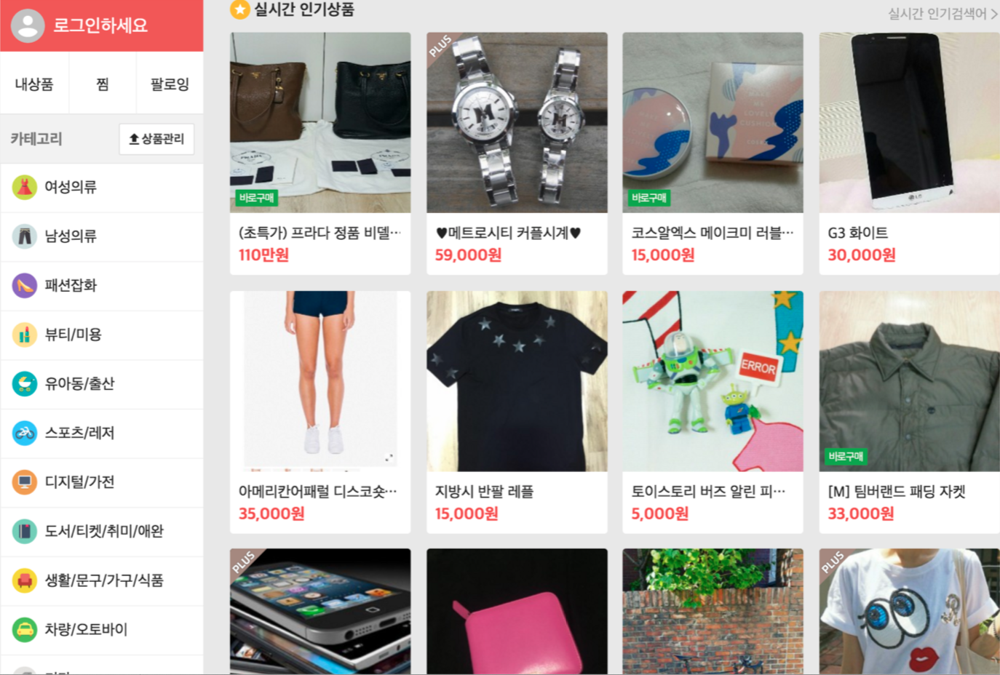문화다양성관련 동화 안드로이드 앱
사용기술: Java 1.7, Android 2.3.x, PHP4, CakePHP 1.3.x, MySQL 5.x, Git, Eclipse
주요역할: 안드로이드 User Interface 개선 및 PHP 기반의 서버쪽 API 유지보수
적용사례: 올리볼리 서비스에서 제공되는 동화별 교육자료들을 Android 앱 형태로 제공
기업에서 제공하는 OpenAPI나 상업용 API를 효과적으로 관리하기 위한 서비스
5개월간 인턴으로 근무했지만, 서비스를 개선하기 전 테스트 방법을 공부
이를 통해 유입되는 데이터들을 분석하고, 서비스를 개선해나가는 경험을 할 수 있었습니다.
사용기술: Java 1.7, Python 3.x, Spring 3.1.x, AWS, MySQL 5.x, Maven, Git, STS, SoapUI
주요역할: 플랫폼 내 트랙픽 통계자료 및 시스템 분석, API Testing 도구(=SoapUI)를 활용한 플랫폼 Service API 개선
동덕여자대학교 학생들과 진행한 프로젝트. 한강을 배경으로한 여러 지역을 지정하여 파노라마형태로 서비스 제공
2명의 개발자, 3명의 기획 및 디자이너로 구성되었으며,
웹에서 제공된 파노라마 기술과 미디어(사진, 음악) 등의 데이터를 활용하여 인터렉티브한 웹 서비스 만들어본 경험을 할 수 있었습니다.
사용기술: HTML, Javascript, Jquery, ActionScript, CSS, Pano2VR
주요역할: 서비스 개발
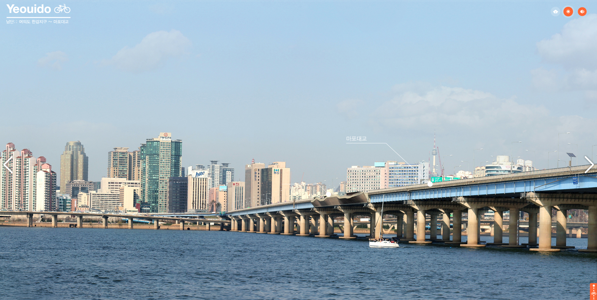
모임, 초대를 기반으로 한 커뮤니티형 웹 서비스로 PM 1명, 개발자 1명, 디자이너 및 퍼블리싱 1명으로 구성되어 진행하였습니다.
개발은 완료했지만, 내부적인 사정으로 런칭에 실패했습니다.
많은 사용자를 고려한 웹 서비스를 설계하고 이에 따른 결과로 개발 및 운영까지 시도해볼 수 경험을 할 수 있었습니다.
사용기술: Java 1.6, JSP, Spring Framework 2.5.x, Struts 1.3.8, Ibatis 2.3.0, MySQL 5.x, SVN, Eclipse
주요역할: 전체적인 시스템 구조 설계 및 기능개발
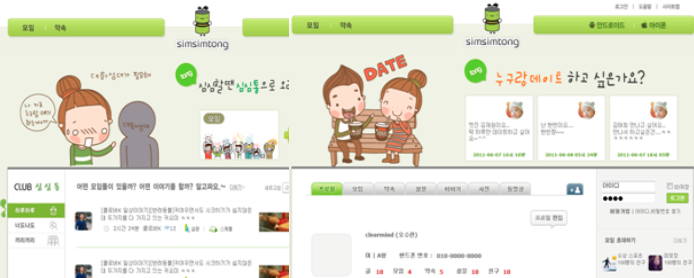
Wibro Egg 단말기 관리 Android
- 연결관리
- 신호관리
- 배터리관리
- 보안관리
사용기술: Java 1.6, Android 2.2, SVN, Eclipse
주요역할: 단말기와 앱 연결 및 사용을 위한 기능개발
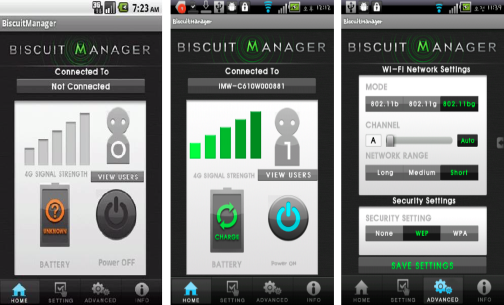사용기술: Java 1.6, Android 2.2, Spring Framework 2.5.x, Struts 1.3.8, Ibatis 2.3.0, MySQL 5.x, SVN, Eclipse
주요역할: Java, JSP, Struts, Spring, Ibatis 기반의 웹 서버 구축, SNS 및 위, 경도 데이터를 활용한 지도보기 기능 개발
공군 영외자(장교, 부사관, 군무원)등을 대상으로 한 표준 평가 관리체계를 구축한 프로젝트입니다.
총 5명의 팀 구성으로 PL을 맡았으며, 서비스에 필요한 기능을 도출하고 이에 따른 산출물을 작성하였습니다.
공군 내에서 표준으로 제공되는 프레임워크를 개선하여 서비스에 활용할 수 있도록 도입하였습니다.
사용기술: Java 1.4, 공군 사내 프레임워크(Spring Framework 2.5.x, Struts 1.3.8, Ibatis 2.3.0), HTML, Javascript, CSS, Weblogic, Oracle 10g, SVN, Eclipse
주요역할: 기존에 개발된 공군 사내 프레임워크 기능 개선 작업, UML을 활용한 시스템 분석 및 설계
공군 영외자(장교, 부사관, 군무원)등을 대상으로 한 표준 제수당지급 관리체계를 구축한 프로젝트입니다.
PL을 맡았으며, 공군 내에 도입된 사용자관리 모듈을 활용하여 인증체계 적용.
수당체계에 사용되는 기능을 중점적으로 개발하며 관련 지식을 얻을 수 있었습니다.
사용기술: Java 1.4, 공군 사내 프레임워크(Spring Framework 2.5.x, Struts 1.3.8, Ibatis 2.3.0), HTML, Javascript, CSS, Weblogic, Oracle 10g, SVN, Eclipse
주요역할: 회원관리, 이미지 뷰어 등 요구사항에 필요한 기능 개발, 기존에 개발된 파일업로드, 결재모듈 기능 개선
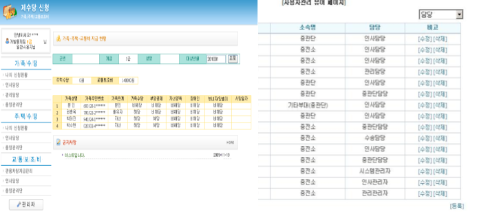
공군 군악대 업무관리를 위해 만들어진 체계이며, 처음 웹 프로젝트를 참여한 경험이었습니다.
Java, JSP로 별도의 프레임워크를 사용하지 않고 만들어졌으며, 주로 Oracle 쿼리를 개선하여,
통계 및 일정관리 페이지를 작업하였습니다.
사용기술: Java 1.4, JSP, HTML, Javascript, CSS, Weblogic, Oracle 10g, SVN, Eclipse
주요역할: 서비스 기능 개발(악기 데이터 및 일정관리)
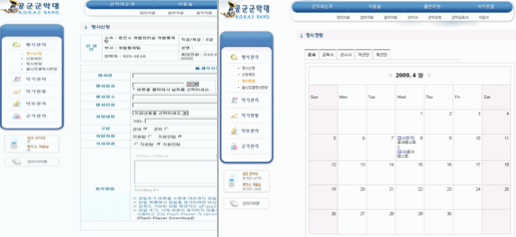
비영리 단체들에게 필요한 웹 서비스를 개발하였고, 이외에 비영리기관들을 위한 웹 서비스 가이드 등을 소개하였습니다.
활동하는 기간동안 비영리쪽에 IT현장을 간접적으로 조금이나마 체험해 볼 수 있었으며,
이와 관련된 커뮤니티와 다양한 분야에 종사하시는 분들도 만날 수 있는 경험을 할 수 있었습니다.
아이들을 대상으로 정보활용, 정보생활, 대안놀이 등을 가르치며 같이하는 봉사활동이었습니다.
PC, 스마트폰과 같은 대중화된 매체에 빠져버린 아이들에게 게임중독, 사이버 폭력 등을 예방하고,
인터넷 상에 지켜야할 예절과 온라인이 아닌 오프라인에서 함께할 수 있는 놀이 등을 해보았습니다.
연령 차이가 많이 나서인지 수업에 어려움도 있었지만, 아이들과의 눈높이를 맞추어 배울 수 있는 소중한 경험이었습니다.